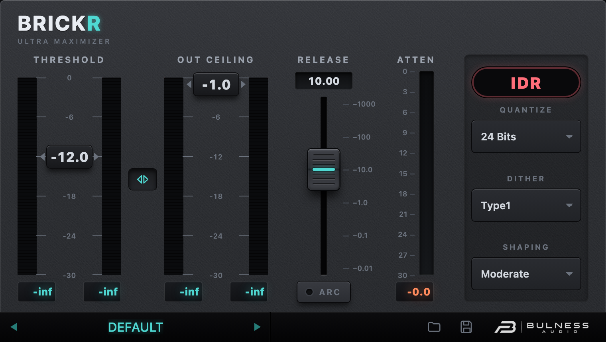

Um maximizer de pico para master e bus. THRESHOLD empurra o nível, OUT CEILING é o teto de saída, e o limitador segura os transientes com lookahead — sem saturar o material.
Baixar o threshold aumenta o ganho de entrada e o makeup na mesma medida. O material fica mais alto e o limitador trabalha mais.
É o teto real. Baixar o ceiling deixa tudo mais baixo e abre espaço para o limitador segurar picos.
O ganho é calculado com 64 amostras de antecedência (48 kHz): nenhuma amostra passa do teto, sem overshoot.
O BRICKR só aplica ganho: THD medida no teto é 0,000 %. A cor vem do material, não do limitador.
Da esquerda para a direita: threshold, link, out ceiling, release/ARC, atenuação e IDR.
| Seção | O que faz |
|---|---|
| THRESHOLD | Slider com escala 0 a −30 dB. É o drive. Os dois medidores ao lado mostram o pico de entrada L/R; embaixo, o pico desde o último clique (clique para zerar). |
| LINK | Botão de setas entre as colunas. Ligado, THRESHOLD e OUT CEILING andam juntos (mesmo dB, mesma posição). Desligado, cada um mexe sozinho. |
| OUT CEILING | Teto de saída, 0 a −30 dB. Medidores de saída e pico, iguais aos da esquerda. |
| RELEASE | Tempo de recuperação, 0,01 a 1000 ms (escala log). Só vale com o ARC desligado. |
| ARC | Auto Release Control: libera rápido picos isolados e devagar reduções sustentadas. Ligado, o slider de release é ignorado. |
| ATTEN | Quanta redução o limitador está aplicando agora, em dB (0 a 30). |
| IDR | Seção de saída digital: QUANTIZE (bits), DITHER e SHAPING. |
A barra no rodapé mostra o preset atual. As setas ◀ ▶ percorrem a lista; clicar no nome abre o navegador com categorias (Geral, Master, Mix, Instrumento), busca por nome/tag, favoritos e recentes. O botão Save grava o ajuste atual como preset de usuário.
Um asterisco depois do nome indica que você mexeu em algo desde que o preset foi carregado.
O botão ? na barra abre este manual em PDF (é o mesmo arquivo, embutido no plug-in).
| Parâmetro | Faixa | Padrão | Observação |
|---|---|---|---|
| Threshold | −30 … 0 dB | −6,0 | Drive. Descer = mais alto e mais redução. |
| Out Ceiling | −30 … 0 dB | −0,2 | Teto de saída. O pico nunca passa daqui. |
| Release | 0,01 … 1000 ms | 100 | Log. Ignorado com ARC ligado. |
| ARC | off / on | on | Release automático por programa. |
| Link | off / on | on | Prende threshold + ceiling. |
| Quantize | 24/22/20/18/16/8 | 24 | Profundidade de saída do IDR. |
| Dither | Off/Type1/Type2 | Type1 | Type1 = TPDF. Type2 = sem dither. |
| Shaping | None…Ultra | Normal | Curva de ruído do IDR. |
O ganho de repouso é ceiling − threshold em dB. Para um sinal abaixo do threshold, a saída é simplesmente o material deslocado por esse valor. Quando o pico passa do threshold, o limitador puxa o ganho para que a saída pare no ceiling.
Os presets de instrumento (Kick, Snare/Clap, Bass, Vocal, Synth, Hats/Perc, Keys) foram calibrados para o material indicado no nome: cada um tem um alvo de redução e um tempo de release próprios.
| Preset | Threshold | Ceiling | Release | ARC | IDR |
|---|---|---|---|---|---|
| Geral | |||||
| Default | -6,0 dB | -0,2 dB | 100 ms | on | 24 bits · Type1 · Normal |
| Master | |||||
| Club | -8,0 dB | -0,3 dB | 60 ms | on | 24 bits · Type1 · Normal |
| Streaming | -6,0 dB | -1,0 dB | 120 ms | on | 24 bits · Type1 · Normal |
| Loud | -11,0 dB | -0,1 dB | 40 ms | on | 24 bits · Type1 · Normal |
| Gentle | -5,0 dB | -0,5 dB | 250 ms | on | 24 bits · Type1 · Normal |
| CD 16 Bit | -7,0 dB | -0,3 dB | 80 ms | on | 16 bits · Type2 · Normal |
| Mix | |||||
| Bus Glue | -6,0 dB | -1,0 dB | 200 ms | on | 24 bits · Type1 · Normal |
| Drum Bus | -7,0 dB | -0,5 dB | 25 ms | off | 24 bits · Type1 · Normal |
| Parallel | -15,0 dB | -3,0 dB | 15 ms | off | 24 bits · Type1 · Normal |
| Safety | -4,0 dB | -1,0 dB | 100 ms | on | 24 bits · Type1 · Normal |
| Instrumento | |||||
| Kick | -7,0 dB | -0,5 dB | 8 ms | off | 24 bits · Type1 · Normal |
| Snare/Clap | -9,0 dB | -0,5 dB | 15 ms | off | 24 bits · Type1 · Normal |
| Bass | -6,0 dB | -0,5 dB | 90 ms | on | 24 bits · Type1 · Normal |
| Vocal | -6,0 dB | -1,0 dB | 120 ms | on | 24 bits · Type1 · Normal |
| Synth | -6,0 dB | -0,8 dB | 80 ms | on | 24 bits · Type1 · Normal |
| Hats/Perc | -8,0 dB | -1,0 dB | 10 ms | off | 24 bits · Type1 · Normal |
| Keys | -5,1 dB | -1,0 dB | 200 ms | on | 24 bits · Type1 · Normal |
Valores de THRESHOLD/CEILING/RELEASE em dB e ms; ARC, Quantize, Dither e Shaping como no painel. O alvo de GR é a redução de pico usada na calibração de cada material.
O IDR é a seção de saída digital: define em quantos bits o sinal sai, com que dither e com que formato de ruído.
24, 22, 20, 18, 16 e 8 bits. Para master, deixe em 24; para CD, 16; 8 bits existe para efeitos e testes.
Quatro curvas (None, Moderate, Normal, Ultra) que empurram o ruído de quantização para o agudo, onde o ouvido é menos sensível. Cada degrau levanta o piso total em ~6 dB e deixa os graves mais limpos.
| Bits | None | Moderate | Normal | Ultra |
|---|---|---|---|---|
| 24 | −144,5 | −138,3 | −132,5 | −126,6 |
| 20 | −120,4 | −114,2 | −108,4 | −102,5 |
| 16 | −96,3 | −90,2 | −84,4 | −78,4 |
Piso de ruído medido em dBFS, sem sinal. Para conferir: silêncio na entrada, 16 bits e Shaping Ultra — o chiado deve ficar em torno de −78 dBFS.
Brkr), Standalone~/Library/Audio/Plug-Ins/VST3/BRICKR.vst3~/Library/Audio/Plug-Ins/Components/BRICKR.componentSe o plug-in não aparecer na lista do host, faça um rescan de plug-ins ou reinicie o host. No Logic, o AU pode ser exigido em Preferences → Plug-in Manager.
| Sintoma | Causa e solução |
|---|---|
| “Está cortando” / som sujo | Threshold baixo demais para o material: aumente o THRESHOLD até o ATTEN voltar a 3–5 dB. |
| Não faz volume | Confira o OUT CEILING (se estiver muito baixo, a saída fica baixa) e se o LINK está prendendo os dois. |
| Release não muda nada | Com ARC ligado o slider é ignorado por projeto. Desligue o ARC para controlar o release manualmente. |
| Chiado no silêncio | IDR com dither/shaping em bits baixos é audível de propósito. Para silêncio absoluto, Dither Type2. |
Categorias à esquerda, busca no topo, lista no meio e ficha do preset à direita com THRESHOLD, CEILING, RELEASE, ARC, IDR e a redução média medida. CARREGAR aplica, SALVAR COMO cria um novo, FAVORITO marca e EXPORTAR gera um arquivo do preset.
BRICKR 0.1.0 · Bulness Audio · este manual descreve o comportamento da versão atual. Especificações podem mudar sem aviso.